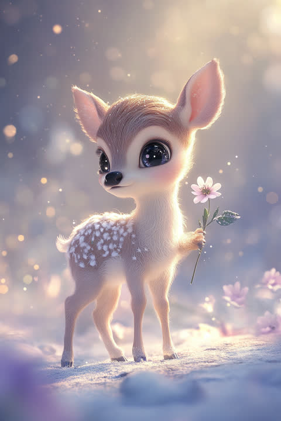

In the language of Five Element fortune-telling, the 'The Deer Who's Easily Hurt but Never Bends' type carries a Wood temperament. Lucky color: moss green.
Where others carry a calculator, you carry a compass — "does this sit right with me?" beats "what do I gain?" every single time. Trends and majority votes rarely move you; the values at your core are simply not for sale. You cry real tears at stories and feel other people's pain as if it were your own. Yes, that means you bruise easily — but it also means you feel more deeply than almost anyone, and the warmth you give someone you trust runs quiet and hot. Your element is Wood — growing patiently toward the light of an ideal. Lucky color: moss green. Tip: on days the ideal feels far away, count the distance you've covered, not the distance left. Small steps are still steps.
"Meeting this person doesn't feel like a coincidence" — you're the kind of romantic who can genuinely believe that. You find meaning in ordinary moments and quietly let them fill you up. Loving deeply means the gap between hope and reality can sting on some nights, but the devotion you give someone you've opened up to is absolutely real. Your Wood energy points to a love that blooms most beautifully when it isn't rushed. Lucky action: keep a houseplant nearby. Tip: set the ideal script aside and enjoy your partner's ad-libs — reality sometimes writes better scenes than you would.
The moment the "why" catches fire, you can climb higher than anyone. Your empathy softens the sharp edges of a team, but on days the work feels meaningless, your altitude drops like a balloon out of fuel. Those motivation swings aren't a defect — they're a wind gauge telling you which direction is truly yours. Your Wood energy favors slow-grown effort ripening into real trust. Lucky action: keep a small houseplant on your desk. Tip: before starting a task you dread, write down one person it helps. That alone puts a little fuel back in the burner.
Creative roles like writing, editing, and illustration, plus counseling, library work, and research in the humanities. Since "does this mean something?" is the fuel you run on, choosing a place where the themes overlap with your own values matters far more than scale or pay.
Your growth edge is the courage to release things before they reach the ideal. The more beautiful the vision in your head, the rougher the real first draft looks — and your hands stop. But the ideal only gets closer while you're finishing. Separate making from judging: declare "today is a drafting day" and postpone the quality verdict until tomorrow, and you'll find it much easier to move forward. The other thing: stop holding practical numbers and logistics at arm's length as "cold." Reframe budgets and schedules as the armor that protects your values for the long run, and they'll suddenly switch sides and become your allies.
This quiz scores your Personality, Love, and Career types independently, so the three don't always come out as the same type. Curious what your real type is? Try the free 3-minute quiz.